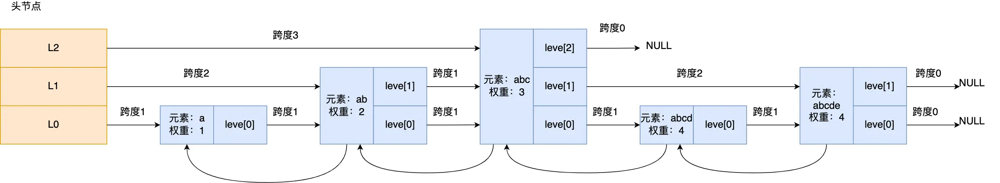
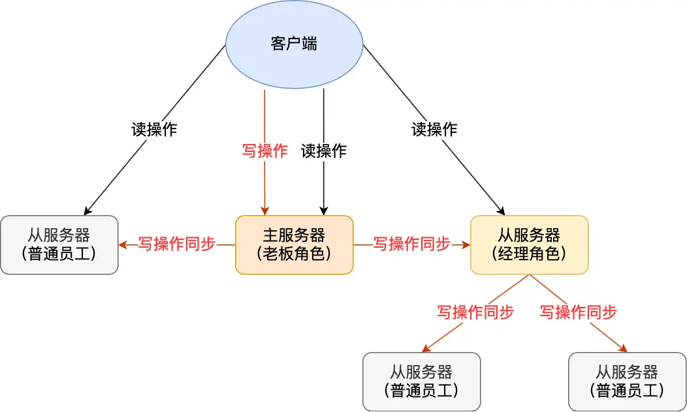
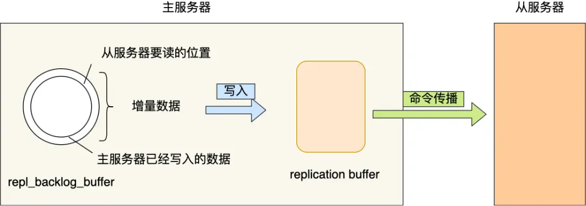

redis-面试
Redis 面试要点
基础
什么是redis
redis 是开源的基于内存的数据库，读写都在内存中，因此速度非常快，常用于缓存、消息队列、分布式锁等场景。
redis 提供了5种常用的数据类型：String(字符串)、List (列表)、Hash(哈希)、Set(集合)、Zset(有序集合)，并且对数据类型的操作都是原子性的，因为是由单线程来执行命令，不存在并发竞争问题。
redis 还支持事务、持久化、lua脚本、多集群方案（主从复制模式、哨兵模式、切片机群模式）、发布/订阅模式，内存淘汰机制、过期删除机制等等。
redis 和 memcached 区别
共同点
- 都是基于内存的数据库，一般都用来当做缓存。
- 都有过期策略。
- 性能都非常高
区别
- 数据类型丰富
redis支持丰富的数据类型，而memcached只支持最简单的key-value数据类型。 - 持久化到磁盘
redis支持数据的持久化到磁盘中，而memcached重启或者挂掉后，内存数据会丢失。 - 原生支持集群模式
redis原生支持集群模式，而memcached原生无集群，需要依靠客户端实现往集群中分片写入。 - 提供更多功能
redis支持发布订阅模型、lua脚本、事务等功能，而memcached不支持。
- 数据类型丰富
为什么用redis作为mysql的缓存
主要是因为redis具备【高性能】和【高并发】两种特性。
高性能
redis 数据存在于内存中，所以速度非常快。高并发
单设备的redis的qps是mysql的10倍，能轻松破10万，而mysql单机的QPS很难破1万。
redis 高并发的原因
- 基于内存，读写速度非常快。
- 单线程，省去很多上下文切换线程的开销。
- 采用多路 I/O 复用技术可以让单个线程高效的处理多个连接请求。
数据结构
数据类型及使用场景

Redis 提供了丰富的数据类型，常见的有五种数据类型：String（字符串），List（列表），Hash（哈希），Set（集合）、Zset（有序集合）。
应用场景
- string: 缓存对象、常规计数、分布式锁、共享session信息。
- list: 消息队列。
- hash: 缓存对象、购物车。
- set: 聚合计算，比如点赞、共同关注、抽奖活动。
- zset: 排序场景，比如排行榜、电话和姓名排序等。
数据类型底层结构实现

string -> SDS
list -> 压缩列表/双向链表 -> （listpack+双向链表）quicklist
hash -> 压缩列表/哈希表 -> listpack/哈希表
set -> 哈希表/整数集合
zset -> 压缩列表/跳表 -> listpack/跳表
String 类型实现

String 类型的底层的数据结构实现主要是 SDS（简单动态字符串），相比C语言的原生字符串：
- SDS 不仅可以保留文本数据，还可以保存二进制数据。因为SDS使用len属性而不是空字符来判断字符串结束。
- SDS 获取字符串长度的时间复杂度为O(1)。
- SDS api是安全的，拼接字符串不会造成缓冲区溢出。
List 类型实现

在 Redis 3.0 之前，List 对象的底层数据结构是双向链表或者压缩列表。
- 双向链表
- 优点：可以保存不用类型的值、快速获取某个节点的前后节点
- 缺点：无法很好地利用cpu缓存，额外指针内存开销大
- 压缩列表
- 优点：内存紧凑，连续内存空间，很好地利用cpu缓存。
- 缺点：不能保存过多元素，否则查询效率低，新增或修改可能导致连锁更新问题。
- 双向链表
然后在 Redis 3.2 的时候，List 对象的底层改由 【quicklist】 数据结构实现。
- 其实 quicklist 就是「双向链表 + 压缩列表」组合。
- 通过控制每个链表节点中的压缩列表的大小或者元素个数，来规避连锁更新的问题。因为压缩列表元素越少或越小，连锁更新带来的影响就越小，从而提供了更好的访问性能。
Hash 类型实现
在 Redis 7.0 之前，Hash 类型的底层数据结构是由压缩列表或哈希表实现的
在 Redis 7.0 中，压缩列表数据结构已经废弃了，交由 【listpack】 和【哈希表】来实现了。
哈希

- 哈希表实际上是数组，所以可以通过索引值快速查询到数据。
- 在哈希表大小固定的情况下，随着数据不断增多，那么哈希冲突的可能性也会越高。
- redis采用链式哈希解决哈希冲突，将具有相同哈希值的数据串起来。
- rehash
- 给「哈希表 2」 分配空间，一般会比「哈希表 1」 大 2 倍；
- 将「哈希表 1 」的数据迁移到「哈希表 2」 中；
- 迁移完成后，「哈希表 1 」的空间会被释放;
- 并把「哈希表 2」 设置为「哈希表 1」;
- 然后在「哈希表 2」 新创建一个空白的哈希表，为下次 rehash 做准备。
- 渐进式 rehash
- 给「哈希表 2」 分配空间；
- 在 rehash 进行期间，
- 查找：先查找「哈希表 1」，如果没有，则查找「哈希表 2」；
- 新增：保存到「哈希表 2 」，而「哈希表 1」 则不进行任何操作；
- 删除：依次对「哈希表 1」和「哈希表 2」删除；
- 更新：如果在「哈希表 1」上，则删除并新增到「哈希表 2」上；
- 这样就巧妙地把一次性大量数据迁移工作的开销，分摊到了多次处理请求的过程中，避免了一次性 rehash 的耗时操作。
- rehash触发条件
- 负载因子 = 已保存节点数量 / 哈希表大小
- 当负载因子大于等于 1 ，并且 Redis 没有在执行 bgsave 命令或者 bgrewriteaof 命令，也就是没有执行 RDB 快照或没有进行 AOF 重写的时候，就会进行 rehash 操作。
- 当负载因子大于等于 5 时，此时说明哈希冲突非常严重了，不管有没有有在执行 RDB 快照或 AOF 重写，都会强制进行 rehash 操作。
listpack

listpack 没有压缩列表中记录前一个节点长度的字段了，listpack 只记录当前节点的长度，当我们向 listpack 加入一个新元素的时候，不会影响其他节点的长度字段的变化，从而避免了压缩列表的连锁更新问题。
set
Set 类型的底层数据结构是由【哈希表】或【整数集合】实现的：
1. 如果集合中的元素都是整数且元素个数小于 512 （默认值，set-maxintset-entries配置）个，Redis 会使用整数集合作为 Set 类型的底层数据结构；
2. 如果集合中的元素不满足上面条件，则 Redis 使用哈希表作为 Set 类型的底层数据结构。
- 整数集合
- 本质上是一块连续内存空间，每个元素定义某中int类型。
- 整数集合的升级操作，新插入int32_t整数时，由 int16_t 升级为 int32_t。（节省内存）
- 升级过程先扩容，然后从后向前遍历旧元素往最终位置移动。
zset
Zset 类型的底层数据结构是由【压缩列表】-> 【listpack】或【跳表】实现的：
1. 如果有序集合的元素个数小于 128 个，并且每个元素的值小于 64 字节时，Redis 会使用压缩列表作为 Zset 类型的底层数据结构；
2. 如果有序集合的元素不满足上面的条件，Redis 会使用跳表作为 Zset 类型的底层数据结构；
跳表的优势是能支持平均 O(logN) 复杂度的节点查找。
zset 结构体里有两个数据结构：
1. 一个是跳表: 进行高效的范围查询
2. 一个是哈希表: 高效单点查询。
跳表是在链表基础上改进过来的，实现了一种「多层」的有序链表，这样的好处是能快读定位数据。
跳表的相邻两层的节点数量最理想的比例是 2:1，查找复杂度可以降低到 O(logN)。
Redis 则采用一种巧妙的方法是，跳表在创建节点的时候，随机生成每个节点的层数，并没有严格维持相邻两层的节点数量比例为 2 : 1 的情况。
具体的做法是，跳表在创建节点时候，会生成范围为[0-1]的一个随机数，如果这个随机数小于 0.25（相当于概率 25%），那么层数就增加 1 层，然后继续生成下一个随机数，直到随机数的结果大于 0.25 结束，最终确定该节点的层数。
为什么用跳表不用平衡树？
1. 内存上，跳表更灵活，每个节点包含的指针数目平均为1/(1-p)，p取1/4时，平均每个节点包含1.33个指针，而平衡树每个节点包含2个指针。
2. 范围查询时，跳表操作更简单，只需要找到最小值之后，对第一层链表进行遍历即可。而平衡树需要以中序遍历寻找，实现较复杂。
3. 算法实现难度，跳表比平衡树要简单，跳表的插入和删除只需要修改相邻节点的指针。而平衡树的插入和删除操作可能引发子树的调整，逻辑复杂。
线程模型
redis是单线程
「接收客户端请求->解析请求 ->进行数据读写等操作->发送数据给客户端
但是，Redis 程序并不是单线程的，Redis 在启动的时候，是会启动后台线程（BIO）的，主要用来处理「关闭文件、AOF 刷盘、释放内存」等耗时操作：
1. Redis 在 2.6 版本，会启动 2 个后台线程，分别处理关闭文件、AOF 刷盘（AOF日志配置成everysec）这两个任务；
2. Redis 在 4.0 版本之后，新增了一个新的后台线程，用来异步释放 Redis 内存，也就是 lazyfree 线程。例如执行 unlink key / flushdb async / flushall async 等命令，会把这些删除操作交给后台线程来执行，好处是不会导致 Redis 主线程卡顿。因此，当我们要删除一个大 key 的时候，不要使用 del 命令删除，因为 del 是在主线程处理的，这样会导致 Redis 主线程卡顿，因此我们应该使用 unlink 命令来异步删除大key。
单线程模式

图中的蓝色部分是一个事件循环，是由主线程负责的，可以看到网络 I/O 和命令处理都是单线程。
初始化函数
- 首先，调用 epoll_create() 创建一个 epoll 对象和调用 socket() 创建一个服务端 socket
- 然后，调用 bind() 绑定端口和调用 listen() 监听该 socket；
- 然后，将调用 epoll_ctl() 将 listen socket 加入到 epoll，同时注册「连接事件」处理函数。
事件循环函数
- 首先，先调用处理发送队列函数，看是发送队列里是否有任务，如果有发送任务，则通过 write 函数将客户端发送缓存区里的数据发送出去，如果这一轮数据没有发送完，就会注册写事件处理函数，等待 epoll_wait 发现可写后再处理 。
- 接着，调用 epoll_wait 函数等待事件的到来。
单线程还快的原因
- 大部分操作都在内存中完成，并且采用了高效的数据结构。因此 Redis 瓶颈可能是机器的内存或者网络带宽，而并非 CPU，既然 CPU 不是瓶颈，那么自然就采用单线程的解决方案了；
- 单线程模型可以避免了多线程之间的竞争，省去了多线程切换带来的时间和性能上的开销。而且也不会导致死锁问题。
- 采用了 I/O 多路复用机制处理大量的客户端 Socket 请求，IO 多路复用机制是指一个线程处理多个 IO 流，就是我们经常听到的 select/epoll 机制。简单来说，在 Redis 只运行单线程的情况下，该机制允许内核中，同时存在多个监听 Socket 和已连接 Socket。内核会一直监听这些 Socket 上的连接请求或数据请求。一旦有请求到达，就会交给 Redis 线程处理，这就实现了一个 Redis 线程处理多个 IO 流的效果。
为什么使用单线程
单线程的程序是无法利用服务器的多核 CPU 的
- CPU不是制约redis性能表现的瓶颈所在，更多情况下是受到内存和网络带宽的限制。
- 单线程可维护性高，多线程带来并发读写的一系列问题，增加系统复杂度，同时可能存在线程切换、加锁解锁、死锁造成的性能损耗。
6.0之后为什么引入多线程
在 Redis 6.0 版本之后，也采用了多个 I/O 线程来处理网络请求，这是因为随着网络硬件的性能提升，Redis 的性能瓶颈有时会出现在网络 I/O 的处理上。
所以为了提高网络 I/O 的并行度，Redis 6.0 对于网络 I/O 采用多线程来处理。
但是对于命令的执行，Redis 仍然使用单线程来处理。
默认情况下 I/O 多线程只针对发送响应数据（write client socket），并不会以多线程的方式处理读请求（read client socket）。要想开启多线程处理客户端读请求，就需要把 Redis.conf 配置文件中的 io-threads-do-reads 配置项设为 yes。
Redis 6.0 版本之后，Redis 在启动的时候，默认情况下会额外创建 6 个线程（这里的线程数不包括主线程）：
1. Redis-server ： Redis的主线程，主要负责执行命令；
2. bio_close_file、bio_aof_fsync、bio_lazy_free：三个后台线程，分别异步处理关闭文件任务、AOF刷盘任务、释放内存任务；
3. io_thd_1、io_thd_2、io_thd_3：三个 I/O 线程，io-threads 默认是 4 ，所以会启动 3（4-1）个 I/O 多线程，用来分担 Redis 网络 I/O 的压力。
持久化
如何实现数据不丢失？
实现了数据持久化的机制，这个机制会把数据存储到磁盘，这样在 Redis 重启就能够从磁盘中恢复原有的数据。
Redis 共有三种数据持久化的方式：
1. AOF 日志：每执行一条写操作命令，就把该命令以追加的方式写入到一个文件里；
2. RDB 快照：将某一时刻的内存数据，以二进制的方式写入磁盘；
3. 混合持久化方式：Redis 4.0 新增的方式，集成了 AOF 和 RBD 的优点；
AOF 日志实现


先执行命令，再写入日志？
优点：
1. 避免额外的检查开销，主要是写操作命令的语法检查。
2. 不会阻塞当前写操作命令的执行。
缺点：
1. 数据可能会丢失。
2. 可能阻塞其他操作，可能阻塞后续其他操作的执行。
AOF 写回策略有几种？
Redis 提供了 3 种写回硬盘的策略，在 Redis.conf 配置文件中的 appendfsync 配置项。
- Always: 每次写操作命令执行完后，同步将 AOF 日志数据写回硬盘；
- Everysec: 先将命令写入到 AOF 文件的内核缓冲区，然后每隔一秒将缓冲区里的内容写回到硬盘；
- No: 先将命令写入到 AOF 文件的内核缓冲区，再由操作系统决定何时将缓冲区内容写回硬盘。
AOF 日志过大，会触发什么机制？
Redis 为了避免 AOF 文件越写越大，提供了 AOF 重写机制。
Redis 的重写 AOF 过程是由后台子进程 bgrewriteaof 来完成的。
1. 子进程进行 AOF 重写期间，主进程可以继续处理命令请求，从而避免阻塞主进程；
2. 子进程带有主进程的数据副本，这里使用子进程而不是线程，因为如果是使用线程，多线程之间会共享内存，那么在修改共享内存数据的时候，需要通过加锁来保证数据的安全，而这样就会降低性能。而使用子进程，创建子进程时，父子进程是共享内存数据的，不过这个共享的内存只能以只读的方式，而当父子进程任意一方修改了该共享内存，就会发生「写时复制」，于是父子进程就有了独立的数据副本，就不用加锁来保证数据安全。
在重写 AOF 期间，当 Redis 执行完一个写命令之后，它会同时将这个写命令写入到 「AOF 缓冲区」和 「AOF 重写缓冲区」。
当子进程完成 AOF 重写工作（扫描数据库中所有数据，逐一把内存数据的键值对转换成一条命令，再将命令记录到重写日志）后，会向主进程发送一条信号，信号是进程间通讯的一种方式，且是异步的。
主进程收到该信号后，会调用一个信号处理函数，该函数主要做以下工作：
1. 将 AOF 重写缓冲区中的所有内容追加到新的 AOF 的文件中，使得新旧两个 AOF 文件所保存的数据库状态一致；
2. 新的 AOF 的文件进行改名，覆盖现有的 AOF 文件。
RDB 快照实现
AOF 日志记录的是操作命令，不是实际的数据，所以用 AOF 方法做故障恢复时，需要全量把日志都执行一遍，一旦 AOF 日志非常多，势必会造成 Redis 的恢复操作缓慢。
RDB 快照就是记录某一个瞬间的全量内存数据，记录的是实际数据。
因此在 Redis 恢复数据时， RDB 恢复数据的效率会比 AOF 高些，因为直接将 RDB 文件读入内存就可以，不需要像 AOF 那样还需要额外执行操作命令的步骤才能恢复数据。
RDB 做快照时会阻塞线程吗？
Redis 提供了两个命令来生成 RDB 文件，分别是 save 和 bgsave，他们的区别就在于是否在「主线程」里执行：
1. 行了 save 命令，就会在主线程生成 RDB 文件，由于和执行操作命令在同一个线程，所以如果写入 RDB 文件的时间太长，会阻塞主线程；
2. 执行了 bgsave 命令，会创建一个子进程来生成 RDB 文件，这样可以避免主线程的阻塞；
执行快照是一个比较重的操作，如果频率太频繁，可能会对 Redis 性能产生影响。如果频率太低，服务器故障时，丢失的数据会更多。
RDB 在执行快照的时候，数据能修改吗？
执行 bgsave 过程中，Redis 依然可以继续处理操作命令的，也就是数据是能被修改的，关键的技术就在于写时复制技术（Copy-On-Write, COW）。
为什么会有混合持久化？
RDB 优点是数据恢复速度快，但是快照的频率不好把握。频率太低，丢失的数据就会比较多，频率太高，就会影响性能。
AOF 优点是丢失数据少，但是数据恢复不快。
Redis 4.0 提出了混合使用 AOF 日志和内存快照，也叫混合持久化，既保证了 Redis 重启速度，又降低数据丢失风险。
混合持久化工作在 AOF 日志重写过程，当开启了混合持久化时，在 AOF 重写日志时，fork 出来的重写子进程会先将与主线程共享的内存数据以 RDB 方式写入到 AOF 文件，然后主线程处理的操作命令会被记录在重写缓冲区里，重写缓冲区里的增量命令会以 AOF 方式写入到 AOF 文件，写入完成后通知主进程将新的含有 RDB 格式和 AOF 格式的 AOF 文件替换旧的的 AOF 文件。
混合持久化优点：
混合持久化结合了 RDB 和 AOF 持久化的优点，开头为 RDB 的格式，使得 Redis 可以更快的启动，同时结合 AOF 的优点，又减低了大量数据丢失的风险。
混合持久化缺点：
1. AOF 文件中添加了 RDB 格式的内容，使得 AOF 文件的可读性变得很差；
2. 兼容性差，如果开启混合持久化，那么此混合持久化 AOF 文件，就不能用在 Redis 4.0 之前版本了。
集群
如何实现服务高可用？
一定要从 Redis 的多服务节点来考虑，比如 Redis 的主从复制、哨兵模式、切片集群。
主从复制

主从复制是 Redis 高可用服务的最基础的保证。
一主多从的模式，且主从服务器之间采用的是「读写分离」的方式。
主从服务器之间的命令复制是异步进行的。所以，无法实现强一致性保证（主从数据时时刻刻保持一致），数据不一致是难以避免的。
形成主从关系命令
1 | replicaof <服务器 A 的 IP 地址> <服务器 A 的 Redis 端口号> |
主从第一次同步
分摊主服务器的压力

增量同步
主从服务器在完成第一次同步后，就会基于长连接进行命令传播。
从 Redis 2.8 开始，网络断开又恢复后，从主从服务器会采用增量复制的方式继续同步。
1. 从服务器在恢复网络后，会发送 psync 命令给主服务器，此时的 psync 命令里的 offset 参数不是 -1；
2. 主服务器收到该命令后，然后用 CONTINUE 响应命令告诉从服务器接下来采用增量复制的方式同步数据；
3. 然后主服务将主从服务器断线期间，所执行的写命令发送给从服务器，然后从服务器执行这些命令。
增量同步环形缓冲区

哨兵模式

哨兵模式可以监控主从服务器，并且提供主从节点故障转移的功能。
切片集群模式
将数据分布在不同的服务器上，以此来降低系统对单主节点的依赖，从而提高 Redis 服务的读写性能。
采用哈希槽（Hash Slot），来处理数据和节点之间的映射关系。
一个切片集群共有 16384(2^14) 个哈希槽，这些哈希槽类似于数据分区，每个键值对都会根据它的 key，被映射到一个哈希槽中，具体执行过程分为两大步：
1. 根据键值对的 key，按照 CRC16 算法计算一个 16 bit 的值。
2. 再用 16bit 值对 16384 取模，得到 0~16383 范围内的模数，每个模数代表一个相应编号的哈希槽。
这些哈希槽怎么被映射到具体的 Redis 节点上的呢？有两种方案：
1. 平均分配： 在使用 cluster create 命令创建 Redis 集群时，Redis 会自动把所有哈希槽平均分布到集群节点上。比如集群中有 9 个节点，则每个节点上槽的个数为 16384/9 个。
2. 手动分配： 可以使用 cluster meet 命令手动建立节点间的连接，组成集群，再使用 cluster addslots 命令，指定每个节点上的哈希槽个数。
集群脑裂导致数据丢失怎么办？
什么是脑裂？
由于网络问题，集群节点之间失去联系。主从数据不同步；重新平衡选举，产生两个主服务。等网络恢复，旧主节点会降级为从节点，再与新主节点进行同步复制的时候，由于从节点会清空自己的缓冲区，所以导致之前客户端写入的数据丢失了。
解决方案：
当主节点发现从节点下线或者通信超时的总数量小于阈值时，那么禁止主节点进行写数据，直接把错误返回给客户端。
Redis主从节点是长连接还是短连接？
长连接
怎么判断 Redis 某个节点是否正常工作？
Redis 判断节点是否正常工作，基本都是通过互相的 ping-pong 心态检测机制，如果有一半以上的节点去 ping 一个节点的时候没有 pong 回应，集群就会认为这个节点挂掉了，会断开与这个节点的连接。
Redis 主从节点发送的心态间隔是不一样的，而且作用也有一点区别：
1. Redis 主节点默认每隔 10 秒对从节点发送 ping 命令，判断从节点的存活性和连接状态，可通过参数repl-ping-slave-period控制发送频率。
2. Redis 从节点每隔 1 秒发送 replconf ack{offset} 命令，给主节点上报自身当前的复制偏移量，目的是为了：
1. 实时监测主从节点网络状态；
2. 上报自身复制偏移量， 检查复制数据是否丢失， 如果从节点数据丢失， 再从主节点的复制缓冲区中拉取丢失数据。
主从复制架构中，过期key如何处理？
主节点处理了一个key或者通过淘汰算法淘汰了一个key，这个时间主节点模拟一条del命令发送给从节点，从节点收到该命令后，就进行删除key的操作。
Redis 是同步复制还是异步复制？
Redis 主节点每次收到写命令之后，先写到内部的缓冲区，然后异步发送给从节点。
为什么会出现主从数据不一致？
主从数据不一致，就是指客户端从从节点中读取到的值和主节点中的最新值并不一致。
是因为主从节点间的命令复制是异步进行的，所以无法实现强一致性保证（主从数据时时刻刻保持一致）。
如何应对主从数据不一致？
- 尽量保证主从节点间的网络连接状况良好，避免主从节点在不同的机房。
- 可以开发一个外部程序来监控主从节点间的复制进度。
- 先用 INFO replication 命令查到主、从节点的进度，然后，我们用 master_repl_offset 减去 slave_repl_offset，这样就能得到从节点和主节点间的复制进度差值了。
- 如果某个从节点的进度差值大于我们预设的阈值，我们可以让客户端不再和这个从节点连接进行数据读取，这样就可以减少读到不一致数据的情况。
主从切换如何减少数据丢失？
- 异步复制同步丢失
- 原因：网络异常导致同步到从节点失败
- 解决：减少同步丢失的可能，减少同步时间，控制主从数据同步时间，超时主节点拒绝写入新的请求。
- 集群产生脑裂数据丢失
- 原因：集群因为主节点网络异常导致哨兵启动选举出一个新的主节点，这时集群就有两个主节点。
旧主节点在这期间还接受客户端写入请求，但由于选举出新的主节点就被迫降级为从节点，此时需要清空数据去同步导致写入请求丢失。 - 解决：当主节点发现从节点下线数量太多，或者网络延迟太大的时候，主动禁止写操作，返回错误给客户端。
- 原因：集群因为主节点网络异常导致哨兵启动选举出一个新的主节点，这时集群就有两个主节点。
主从如何做到故障自动切换？
Redis 哨兵机制就登场了，哨兵在发现主节点出现故障时，由哨兵自动完成故障发现和故障转移，并通知给应用方，从而实现高可用性。
哨兵其实是一个运行在特殊模式下的 Redis 进程，所以它也是一个节点。
哨兵节点主要负责三件事情：监控、选主、通知。
主观下线：如果主节点或者从节点没有在规定的时间内响应哨兵的 PING 命令，哨兵就会将它们标记为「主观下线」。可能只是因为主节点的系统压力比较大或者网络发送了拥塞，所以会有误判情况。
客观下线：为了减少误判的情况，哨兵在部署的时候不会只部署一个节点，而是用多个节点部署成哨兵集群（最少需要三台机器来部署哨兵集群），通过多个哨兵节点一起判断，就可以就可以避免单个哨兵因为自身网络状况不好，而误判主节点下线的情况。
当这个哨兵的赞同票数达到哨兵配置文件中的 quorum 配置项设定的值后，这时主节点就会被该哨兵标记为「客观下线」。quorum 的值一般设置为哨兵个数的二分之一加1，例如 3 个哨兵就设置 2。
主从故障转移操作包含以下四个步骤：
- 第一步：在已下线主节点（旧主节点）属下的所有「从节点」里面，挑选出一个从节点，并将其转换为主节点。
- 第二步：让已下线主节点属下的所有「从节点」修改复制目标，修改为复制「新主节点」；
- 第三步：将新主节点的 IP 地址和信息，通过「发布者/订阅者机制」通知给客户端；
- 第四步：继续监视旧主节点，当这个旧主节点重新上线时，将它设置为新主节点的从节点；
哨兵集群是如何组成的？
哨兵节点之间是通过 Redis 的发布者/订阅者机制来相互发现的。
过期删除和内存淘汰
过期删除策略
每当我们对一个 key 设置了过期时间时，Redis 会把该 key 带上过期时间存储到一个过期字典（expires dict）中，也就是说「过期字典」保存了数据库中所有 key 的过期时间。
当我们查询一个 key 时，Redis 首先检查该 key 是否存在于过期字典中：
1. 如果不在，则正常读取键值；
2. 如果存在，则会获取该 key 的过期时间，然后与当前系统时间进行比对，如果比系统时间大，那就没有过期，否则判定该 key 已过期。
三种过期策略对比
1. 定时删除：创建定时事件，事件处理器到期自动执行
优点：内存最友好，能尽快释放内存
缺点：CPU不友好，过期key较多时会占用相当一部分CPU时间
2. 惰性删除：每次访问 key 时，都检测 key 是否过期，如果过期则删除该 key
优点：CPU最友好，每次访问才检查并删除过期key，只会使用很少的CPU资源。
缺点：内存不友好，如果不访问，过期key则永远停留在内存不会被释放。
3. 定期删除：每隔一段时间「随机」从数据库中取出一定数量的 key 进行抽样检查，并删除其中的过期key，并根据抽样比例和删除时间确定需要继续。
优点：通过限制删除操作执行的时长和频率，来减少删除操作对 CPU 的影响，同时也能删除一部分过期的数据减少了过期键对空间的无效占用。
缺点：内存清理方面没有定时删除效果好，同时没有惰性删除使用的系统资源少。难以确定删除操作执行的时长和频率。如果执行的太频繁，定期删除策略变得和定时删除策略一样，对CPU不友好；如果执行的太少，那又和惰性删除一样了，过期 key 占用的内存不会及时得到释放。
Redis 使用的过期删除策略是「惰性删除+定期删除」这两种策略配和使用，以求在合理使用 CPU 时间和避免内存浪费之间取得平衡。
Redis 的定期删除的流程（默认每秒10次，每次20）：
1. 从过期字典中随机抽取 20 个 key；
2. 检查这 20 个 key 是否过期，并删除已过期的 key；
3. 判断执行时间是否超过上限？
3. 判断过期key是否超过25%？如果本轮检查的已过期 key 的数量，超过 5 个（20/4），也就是「已过期 key 的数量」占比「随机抽取 key 的数量」大于 25%，则继续重复步骤 1；如果已过期的 key 比例小于 25%，则停止继续删除过期 key，然后等待下一轮再检查。
定期删除是一个循环的流程。那 Redis 为了保证定期删除不会出现循环过度，导致线程卡死现象，为此增加了定期删除循环流程的时间上限，默认不会超过 25ms。
持久化时，对过期键会如何处理的？
RDB 文件生成阶段和加载阶段。
- RDB 文件生成阶段：从内存状态持久化成 RDB（文件）的时候，会对 key 进行过期检查，过期的键「不会」被保存到新的 RDB 文件中
- RDB 加载阶段：
- 主服务器：在载入 RDB 文件时，程序会对文件中保存的键进行检查，过期键「不会」被载入到数据库中。
- 从服务器：在载入 RDB 文件时，不论键是否过期都会被载入到数据库中。但由于主从服务器在进行数据同步时，从服务器的数据会被清空。
AOF 文件写入阶段和 AOF 重写阶段。
- AOF 文件写入阶段：当 Redis 以 AOF 模式持久化时，如果数据库某个过期键还没被删除，那么 AOF 文件会保留此过期键，当此过期键被删除后，Redis 会向 AOF 文件追加一条 DEL 命令来显式地删除该键值。
- AOF 重写阶段：执行 AOF 重写时，会对 Redis 中的键值对进行检查，已过期的键不会被保存到重写后的 AOF 文件中，因此不会对 AOF 重写造成任何影响。
主从模式中，对过期键会如何处理？
当 Redis 运行在主从模式下时，从库不会进行过期扫描，从库对过期的处理是被动的。也就是即使从库中的 key 过期了，如果有客户端访问从库时，依然可以得到 key 对应的值，像未过期的键值对一样返回。
从库的过期键处理依靠主服务器控制，主库在 key 到期时，会在 AOF 文件里增加一条 del 指令，同步到所有的从库，从库通过执行这条 del 指令来删除过期的 key。
内存满了，会发生什么？
在 Redis 的运行内存达到了某个阀值，就会触发内存淘汰机制，这个阀值就是我们设置的最大运行内存，此值在 Redis 的配置文件中可以找到，配置项为 maxmemory。
内存淘汰策略有哪些？
Redis 内存淘汰策略共有八种，这八种策略大体分为「不进行数据淘汰」和「进行数据淘汰」两类策略。
不进行数据淘汰的策略
noeviction（Redis3.0之后，默认的内存淘汰策略） ：它表示当运行内存超过最大设置内存时，不淘汰任何数据，而是不再提供服务，直接返回错误。
进行数据淘汰的策略
设置了过期时间的数据中进行淘汰
- volatile-random：随机淘汰设置了过期时间的任意键值；
- volatile-ttl：优先淘汰更早过期的键值。
- volatile-lru（Redis3.0 之前，默认的内存淘汰策略）：淘汰所有设置了过期时间的键值中，最久未使用的键值；
- volatile-lfu（Redis 4.0 后新增的内存淘汰策略）：淘汰所有设置了过期时间的键值中，最少使用的键值;
在所有数据范围内进行淘汰
- allkeys-random：随机淘汰任意键值;
- allkeys-lru：淘汰整个键值中最久未使用的键值；
- allkeys-lfu（Redis 4.0 后新增的内存淘汰策略）：淘汰整个键值中最少使用的键值。
LRU 算法和 LFU 算法有什么区别？
LRU 算法
LRU 全称是 Least Recently Used 翻译为最近最少使用，会选择淘汰最近最少使用的数据。
传统 LRU 算法的实现是基于「链表」结构，链表中的元素按照操作顺序从前往后排列，最新操作的键会被移动到表头，当需要内存淘汰时，只需要删除链表尾部的元素即可，因为链表尾部的元素就代表最久未被使用的元素。
Redis 并没有使用这样的方式实现 LRU 算法，因为传统的 LRU 算法存在两个问题：
需要用链表管理所有的缓存数据，这会带来额外的空间开销；
当有数据被访问时，需要在链表上把该数据移动到头端，如果有大量数据被访问，就会带来很多链表移动操作，会很耗时，进而会降低 Redis 缓存性能。
Redis 是如何实现 LRU 算法的？
Redis 实现的是一种近似 LRU 算法，目的是为了更好的节约内存，它的实现方式是在 Redis 的对象结构体中添加一个额外的字段，用于记录此数据的最后一次访问时间。
当 Redis 进行内存淘汰时，会使用随机采样的方式来淘汰数据，它是随机取 5 个值（此值可配置），然后淘汰最久没有使用的那个。
Redis 实现的 LRU 算法的优点：
不用为所有的数据维护一个大链表，节省了空间占用；
不用在每次数据访问时都移动链表项，提升了缓存的性能；
但是 LRU 算法有一个问题，无法解决缓存污染问题，比如应用一次读取了大量的数据，而这些数据只会被读取这一次，那么这些数据会留存在 Redis 缓存中很长一段时间，造成缓存污染。
LFU 算法
LFU 全称是 Least Frequently Used 翻译为最近最不常用的，LFU 算法是根据数据访问次数来淘汰数据的，它的核心思想是“如果数据过去被访问多次，那么将来被访问的频率也更高”。
所以， LFU 算法会记录每个数据的访问次数。当一个数据被再次访问时，就会增加该数据的访问次数。这样就解决了偶尔被访问一次之后，数据留存在缓存中很长一段时间的问题，相比于 LRU 算法也更合理一些。
Redis 是如何实现 LFU 算法的？
LFU 算法相比于 LRU 算法的实现，多记录了「数据的访问频次」的信息。Redis 对象的结构如下：
Redis 对象头中的 lru 字段，在 LRU 算法下和 LFU 算法下使用方式并不相同。
在 LRU 算法中，Redis 对象头的 24 bits 的 lru 字段是用来记录 key 的访问时间戳，因此在 LRU 模式下，Redis可以根据对象头中的 lru 字段记录的值，来比较最后一次 key 的访问时间长，从而淘汰最久未被使用的 key。
在 LFU 算法中，Redis对象头的 24 bits 的 lru 字段被分成两段来存储，高 16bit 存储 ldt(Last Decrement Time)，用来记录 key 的访问时间戳；低 8bit 存储 logc(Logistic Counter)，用来记录 key 的访问频次。
缓存
- 用户数据存储在数据库，数据库数据落在磁盘上，磁盘读写速度是最慢的。
- 访问数据库的请求量一上来，容易造成数据库崩溃，所以会用redis作为缓存层。
- redis是内存数据库，缓存在redis相当于缓存在内存，内存读写速度比磁盘快好几个数量级。大大提高系统性能。
缓存雪崩、击穿、穿透

缓存雪崩和缓存击穿主要原因是数据不在缓存中，而导致大量请求访问了数据库，数据库压力骤增，容易引发一系列连锁反应，导致系统奔溃。
不过，一旦数据被重新加载回缓存，应用又可以从缓存快速读取数据，不再继续访问数据库，数据库的压力也会瞬间降下来。
而缓存穿透主要原因是数据既不在缓存也不在数据库中。因此，缓存穿透与缓存雪崩、击穿应对的方案不太一样。
数据库和缓存如何保证一致性？
当两个请求并发更新同一条数据的时候，可能会出现缓存和数据库中的数据不一致的现象。
- 先更新数据库，再更新缓存
并发时容易出现缓存和数据库不一致的情况。 - 先更新缓存，再更新数据库
同样会出现不一致的现象。 - 先删除缓存，再更新数据库
同样会出现不一致的现象。 - 先更新数据库，再删除缓存
- 极端情况也是会出现不一致。
- 但是实际中，缓存写入速度远远快于数据库写入。
- 所以可以保证一致性。
- 会影响缓存命中率
心得
- 所有的底层数据结构都是为了高效设计的。
- 都要考虑尽可能减少磁盘读取次数。
- 都要考虑局部性原理，利用cpu缓存。
- 局部性原理（cpu缓存利用）
- 时间局部性
如果一个内存位置被引用，则在不久的将来，它很有可能被再次引用。 - 空间局部性
如果一个内存位置被引用，则在不久的将来，它附近的内存位置很可能被引用。 - 结果
正式因为程序局部性原理，计算机设计者增加了高速缓存存储器这个硬件，从而提高程序对主存的访问速度。
- 时间局部性
- 大杂居（数据增删改-链表）小聚居(局部性原理-数组)
- redis list 的底层数据结构-【快表】
【双向链表 + 压缩列表（类数组）】 - mysql InnoDB 索引 B+ Tree
【双向链表 + 数据页（连续内存空间）】- 非叶子节点是逐渐抽取的索引
- 叶子节点是双向链表数据，链表节点是数据页，数据页是连续内存空间，存放多条串联的数据记录，数据记录分组链表串联，并有分组头目录。
- redis list 的底层数据结构-【快表】